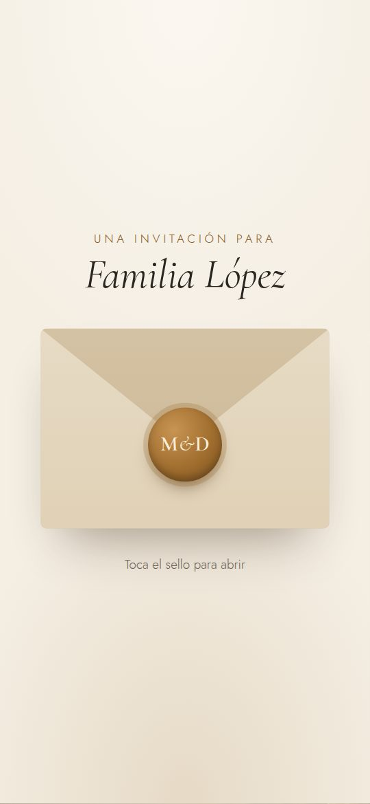
Boda
Bodas y civiles
Cada invitado recibe su pase con su nombre.
- Sobre animado
- Pase personal
- Confirmación
Invitaciones digitales · por Yael González
Cada invitado recibe su pase con su nombre y confirma por WhatsApp. Toca una y ábrela.
Bodas, XV años, despedidas, aniversarios y graduaciones.
Desliza para ver más →

Bodas y civiles
Cada invitado recibe su pase con su nombre.
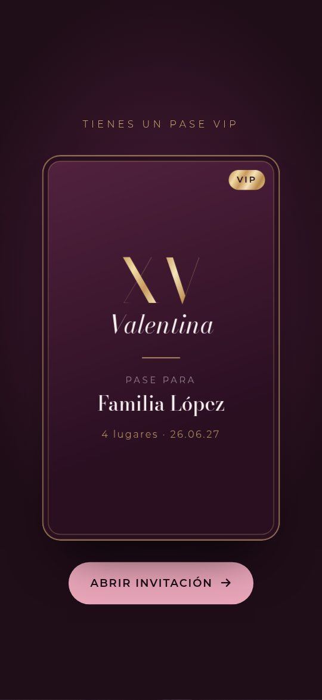
Quinceañeras
Un pase VIP que gira al abrirse.
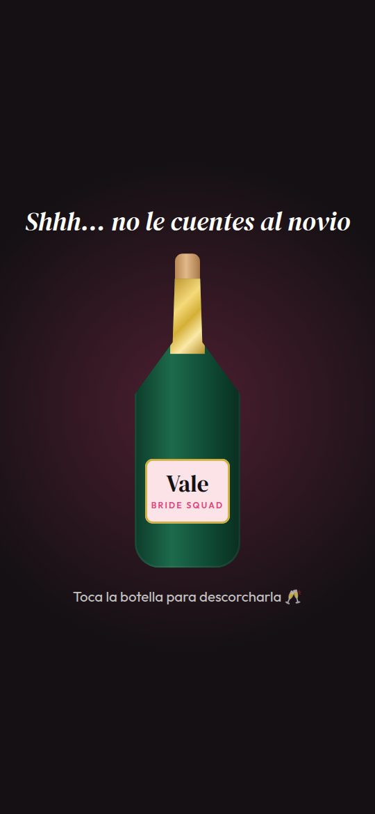
Despedidas y bridal showers
Descorchan la botella y salen burbujas.
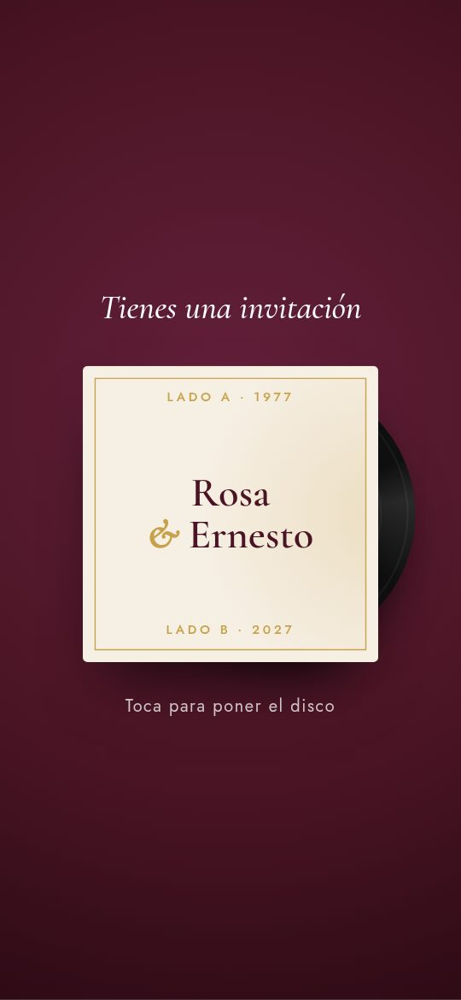
Aniversarios de plata y oro
Un disco sale de su funda y empieza a girar.
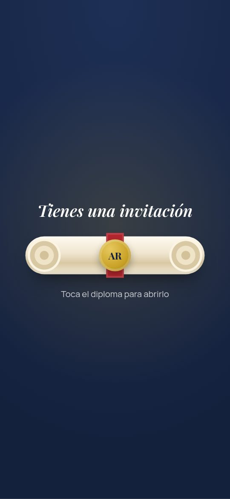
Graduaciones y titulaciones
El diploma se desenrolla con su nombre.
Posadas, revelaciones, baby shower, bautizos, comuniones y cumpleaños.
Desliza para ver más →
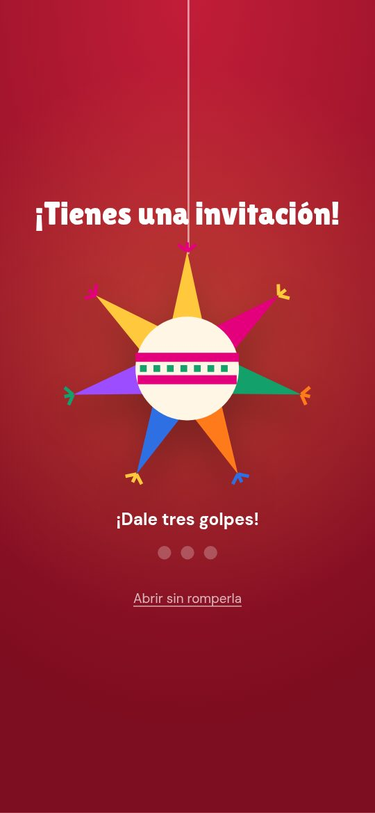
Posadas y fiestas de fin de año
Le pegan tres veces a la piñata y caen dulces.
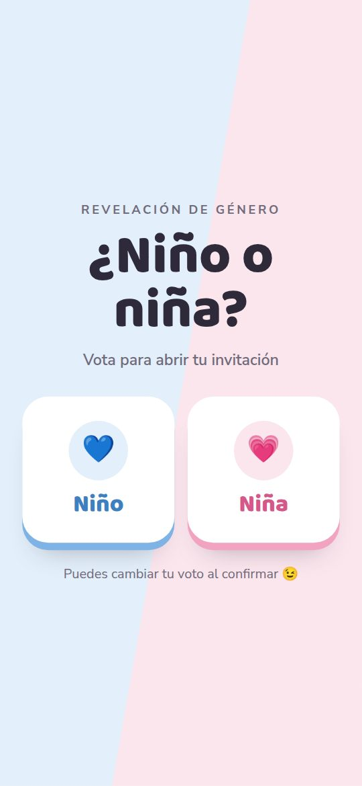
Revelaciones y gender reveals
Votan «niño» o «niña» para abrirla.
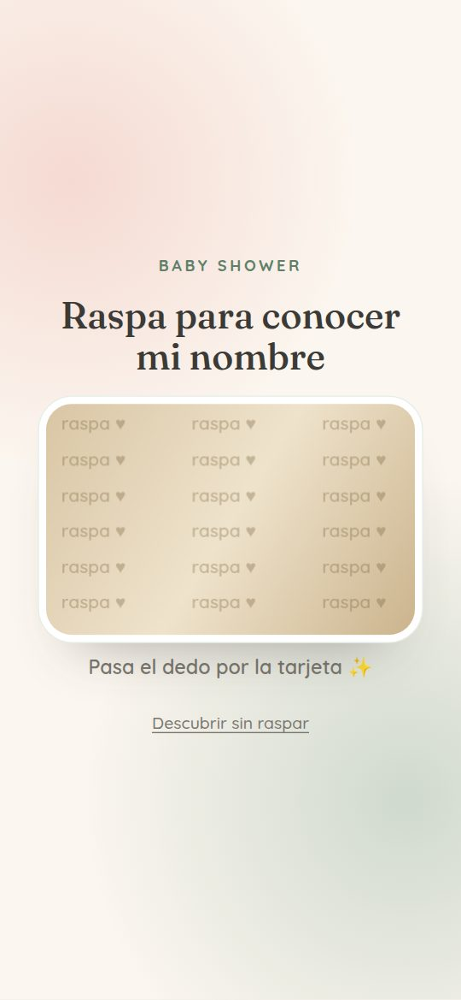
Baby shower y revelaciones
Raspan la tarjeta para descubrir el nombre.
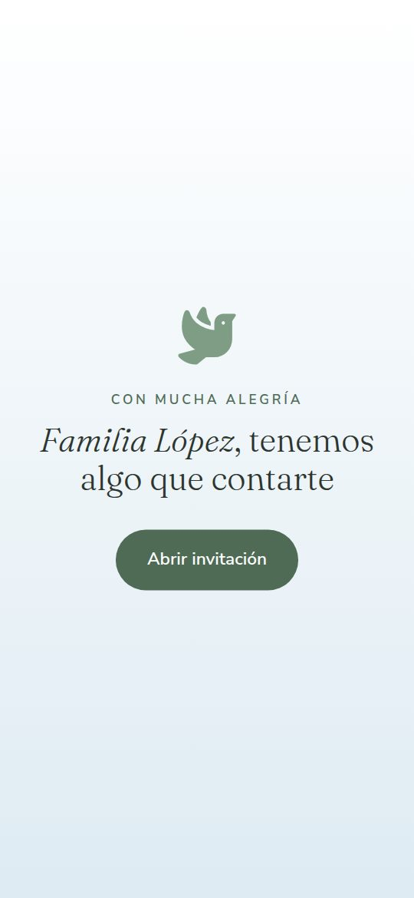
Bautizos y primeras comuniones
Suave y luminosa, con padrinos y misa.
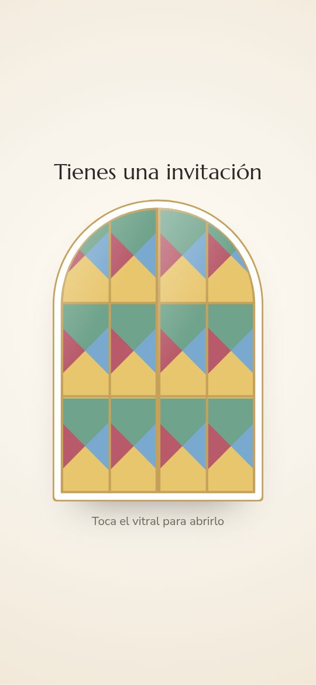
Primeras comuniones y confirmaciones
Las puertas del vitral se abren a la luz.
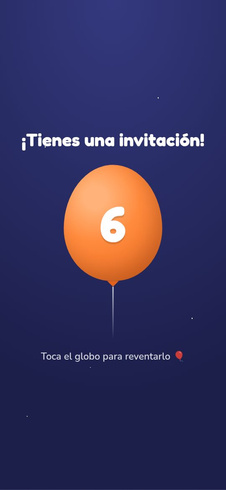
Fiestas de niños
Revientan el globo y sale confeti.
Escribes el nombre de cada familia y cuántos lugares tiene, y sale su enlace listo para mandar por WhatsApp. Nadie se cuela con más lugares.
Probar el generador de pases